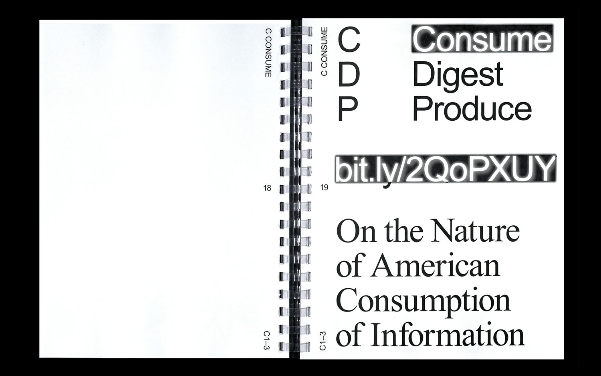
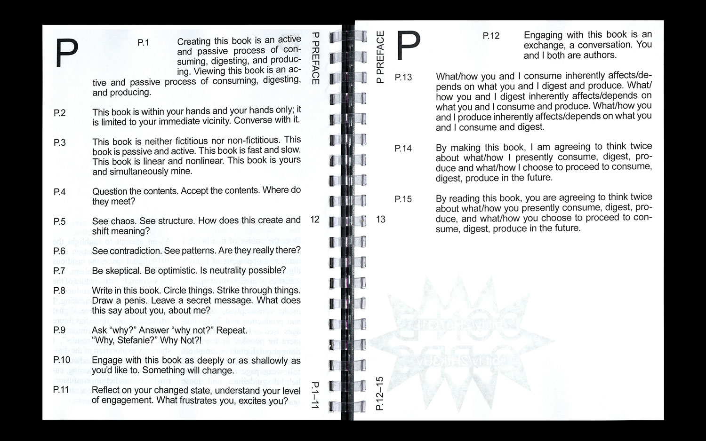
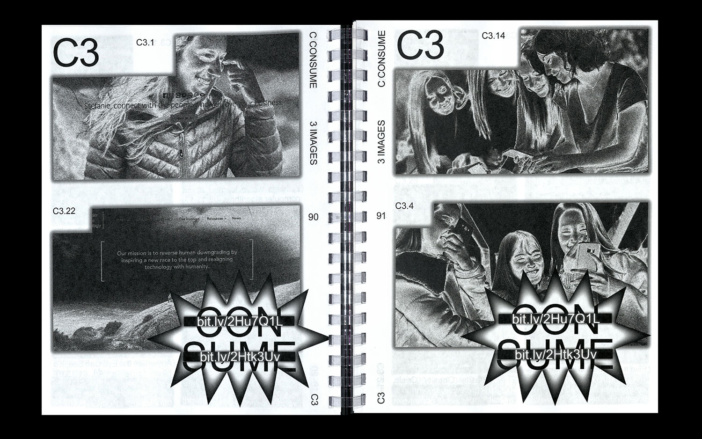
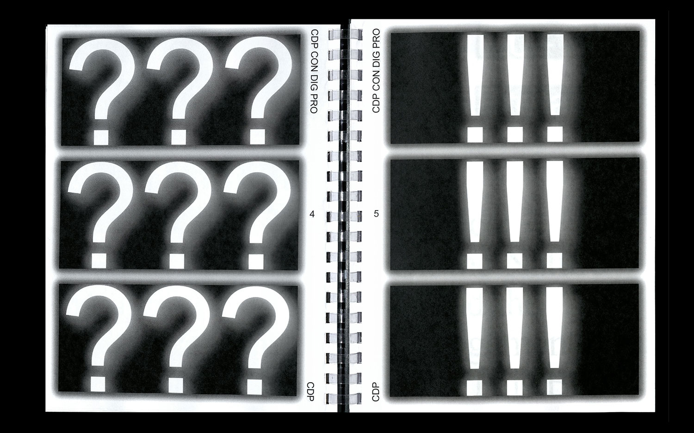
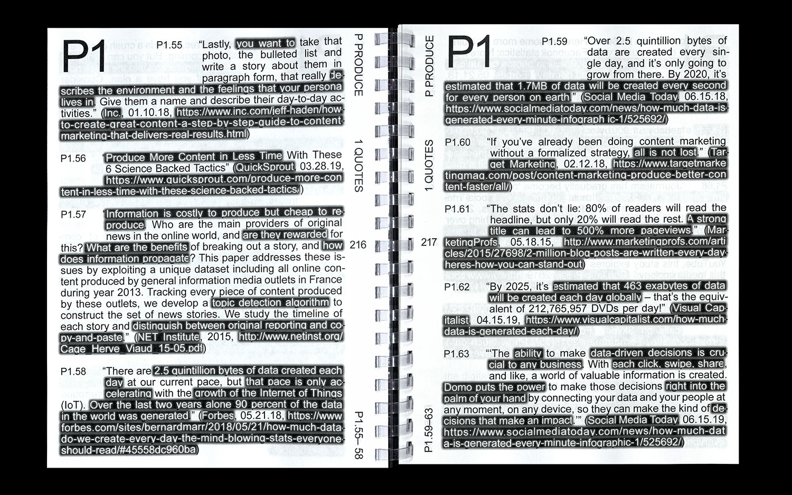
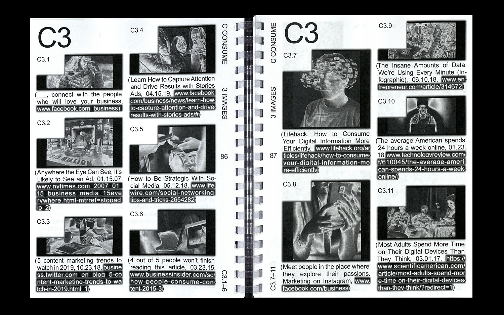
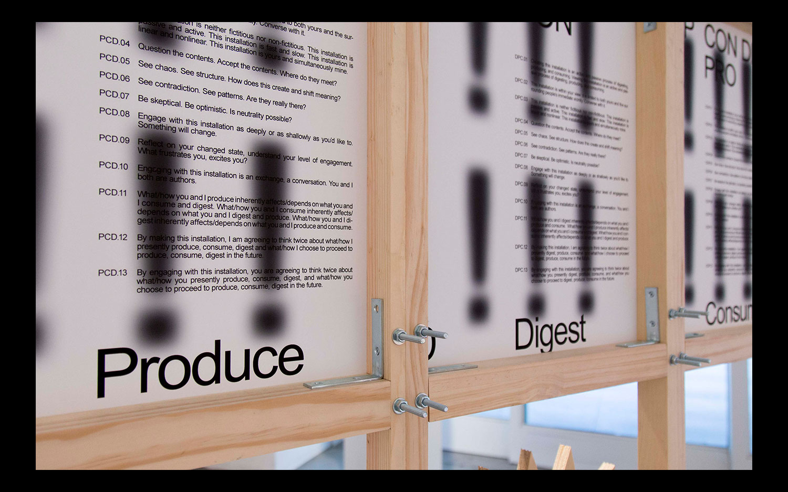

STEFANIE TAM
INFORMATION
06.2019; Installation: 54"x6'2"x2'; Book: 8.5"x11", 292 pages, 3 copies; Website: consumedigestproduce.us
Through the lens of the words, “CONSUME”, “DIGEST”, and “PRODUCE”, “that-i.do/not_think?I=know_what&I_do_not=know” (2019) examines the nature of human interaction with information in today's physical and digital spaces. "that-i.do/not_think?I=know" (2019)'s archival, distributive, and design choices highlight the inundation of information of a 2019 digital space, the insidious effects of semiocapitalism, and the seemingly futile nature of the consumer/digester/producer's search for truth and meaning. The book and website archive 300 quotations, 150 datasets, and 150 images from market research papers, online articles, Youtube videos, opinion pieces, etc. about how the decisions and ideologies of dominant entities in media and tech affect the consumption, digestion, and production of information within online spaces. The website is available at consumedigestproduce.us, and the online PDF is available at consumedigestproduce.us/book.pdf.
By presenting the archived content in the form of a book, a website, and an installation, "that-i.do/not_think?I=know” (2019) explores how the inherent nature of books vs. websites vs. installations affects the reader/viewer’s interpretation and engagement with the curated content. "that-i.do/not_think?I=know” (2019) is an artifact of the search for how we ended up in this mess of surveillance capitalism, incessant advertising, and algorithmically-induced screen addiction.
Artist: Stefanie Tam; Web Development: S.T. & Tyler Yin; Special Thanks to: Rebeca Mendez, Tyler Yin, Israel Gutierrez, Dong Hye Kim, Angeline Wong, Peter Tam, and Chandler McWilliams